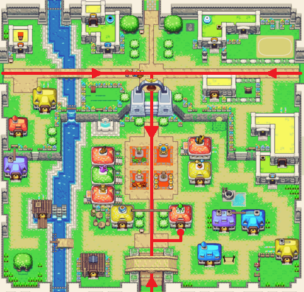
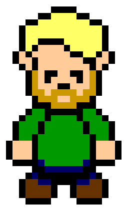

Trésor d'Hyrule

"Parce que vous n'êtes jamais assez préparés pour un donjon !"
Qui sommes-nous ?
Le "Trésor d'Hyrule" a été fondé par deux amis, anciens aventuriers, qui ont décidé de mettre en commun leurs compétences dans le marchandage, acquises tout au long de leurs nombreuses années d'aventure, afin de gagner leur vie d'une manière plus saine et moins dangereuse.
Ils ont ainsi ouvert une boutique que vous trouverez à Hyrule, proche de la grande place, au centre de la cité.

Vous trouverez au "Trésor d'Hyrule" tout l'équipement dont vous aurez besoin si vous voulez partir à l'aventure, et écrire l'histoire, comme l'a fait autrefois le Link de la légende. Des simples flèches aux potions de régénération, en passant par des cartes ou même de grosses armes légendaires magiques bien fat, tous les équipements que nous vendons sont de très bonne qualité, et vous ne trouverez pas moins cher ailleurs!
Horaires d'ouverture :
Lundi 8h-12h / 14h-18h
Mardi 8h-12h / 14h-18h
Mercredi 8h-12h / 14h-18h
Jeudi 8h-12h / 14h-18h
Vendredi 8h-13h30
Samedi 8h-13h / 14h-18h30
Pas de troc, ni de négociations; nous n'acceptions que les rubis.
Aubin
aubin.d@tresorhyrule.hyr

Maxence
maxence.b@tresorhyrule.hyr
 Accueil
Accueil